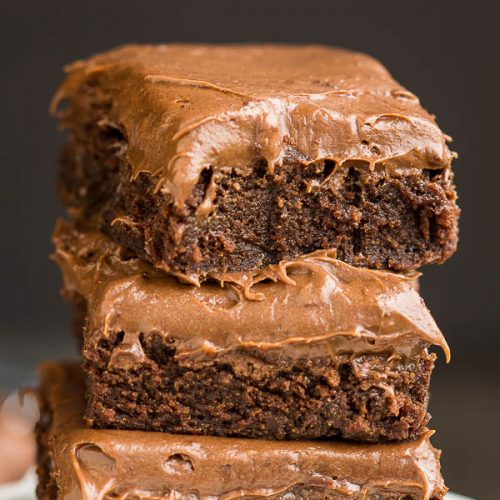

Frosted Brownie

Description
Satisfy your sweet cravings with our decadent frosted brownie recipe.
Rich, fudgy brownie squares crowned with a velvety layer of smooth chocolate frosting,
creating a heavenly combination of indulgence and sweetness.
Ingredients
Brownies
- ½ cup butter
- 1 cup white sugar
- 2 eggs
- 1 teaspoon vanilla extract
- ⅓ cup unsweetened cocoa powder
- ½ cup all-purpose flour
- ¼ teaspoon salt
- ¼ teaspoon baking powder
Frosting
- 3 tablespoons butter, softener
- 3 tablespoons unsweetened cocoa powder
- 1 tablespoon honey
- 1 teaspoon vanilla extract
- 1 cup confectioners' sugar
Steps
-
Preheat the oven to 350 degrees F (175 degrees C). Grease and flour an 8-inch square pan.
-
Melt 1/2 cup butter in a large saucepan. Remove from heat, and stir in sugar, eggs, and 1 teaspoon vanilla.
Beat in 1/3 cup cocoa, flour, salt, and baking powder. Spread batter into prepared pan.
-
Bake in the preheated oven until top is dry and edges have started to pull away from the sides of the pan,
about 25 to 30 minutes. Let cool briefly before frosting.
-
To make the frosting: Combine softened butter, confectioners' sugar, 3 tablespoons cocoa, honey, and 1
teaspoon vanilla extract in a bowl. Stir until smooth. Frost brownies while they are still warm.